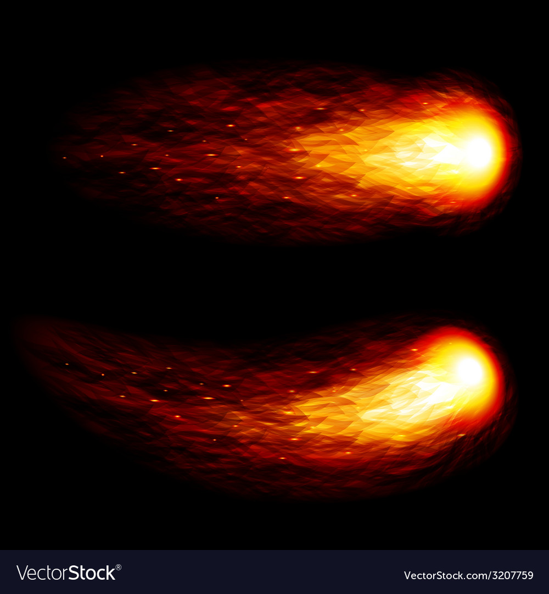

Balls of Fire in the Sky
Sign of the Apocalypse or just Random Anomilies?
Question:
What causes fireballs in the sky?
Answer:
- Fireballs were much in the news over the past month due to a big one that was seen in the Illinois, Michigan, and Indiana areas around local midnight on March 26 - 27, 2003. The fireball streaked across the sky and exploded in a bright flash. But just what causes the fireball, and how often do they occur?
- Fireballs are really just big meteors - the result of meteoroids falling into the Earth's atmosphere and burning up. The rock that caused the "Chicago Fireball", as the March 2003 event has been called, was probably a small space rock about 1 or 2 meters wide. As it fell into the atmosphere, it heated up and eventually broke up into about 500 fragments. These fragments fell to the ground striking houses, cars, and roads -- but no people.
- Fireballs and meteors are common events. An object about one meter in diameter or larger strikes Earth's atmosphere about 40 times per year.
- Few are seen, however, because the fireballs usually appear over unpopulated areas rather than over major cities like Chicago.
Before

After
 To learn More search yourself
To learn More search yourself